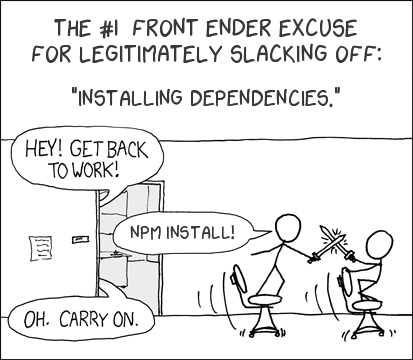
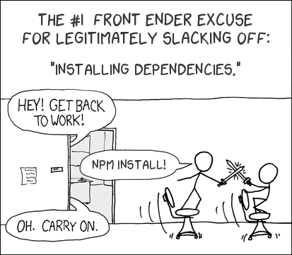
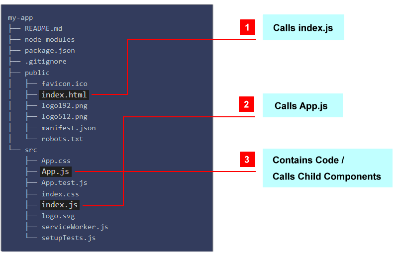
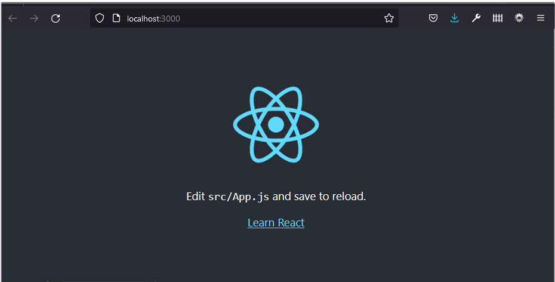
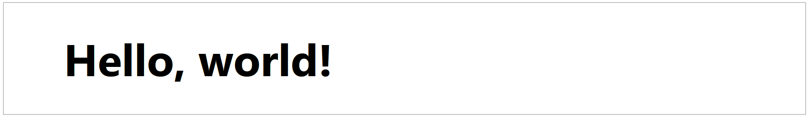
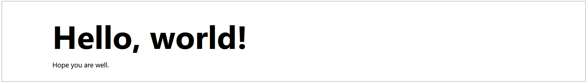
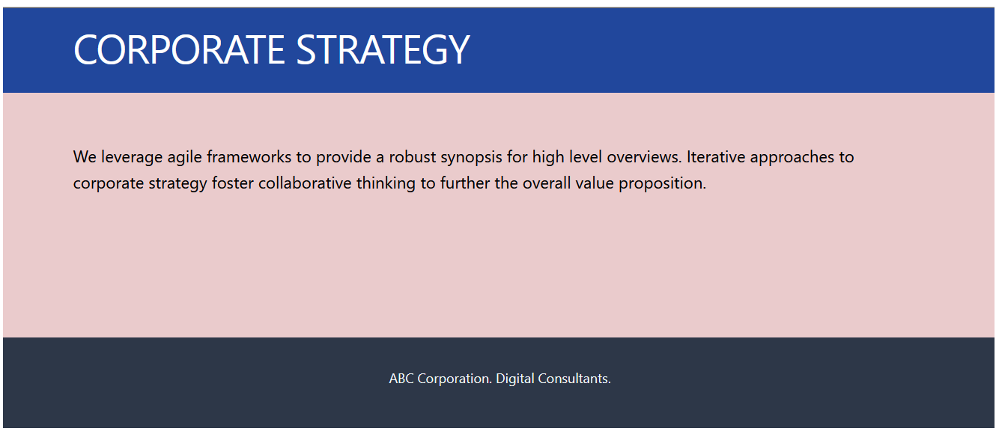

Learning Goals
At the end of this Tutorial, you will be able to:
- Run the create-react-app utility and be familiar with its folder and file structure.
- Customise the template files according to your requirements.
- Build a basic app with functional components, and imported CSS and image files.
About Create React App (CRA)
One way to build a Single Page Application (SPA) with React is to use the official command-line utility called create-react-app.
It sets up your development environment so that you can use the latest JavaScript features, provides a nice developer experience, and optimises your app for production.
Building your first app with CRA
Follow these steps to work with create-react-app.
- In VS Code, choose Terminal | New terminal and navigate to where you want React to create a folder for your app. For example:
C:\> users\JohnSmith
orC:\>
- Type the following command that includes the name you want to call your new app.
C:\> npx create-react-app hello-react
Over a few minutes, React will respond as shown below.
 

React folders and files
React will create the following hierarchy of folders and files.
The items you need to know about for creating a simple app are as listed below.
The /public folder
Your app's root folder that gets served up to the user.
index.html |
The template web page is served when your app is run. It contains a <div id="root"></div> container into which index.js injects the top-level <App /> component. |
The /src folder
This contains your app's components, CSS files, images, and so on. All of the code you write will be located here.
index.js |
The entry point for your app. It contains the ReactDOM.render() statement that injects the top-level <App /> component into the root container of index.html. |
App.js |
This contains the top-level <App /> component of your app. |
Why are two JavaScript files needed?
They are not.
Some developers delete App.js and combine the code into one index.js file.
However, here are the reasons for using two JavaScript files are 'entry points' into your app.
- React components are arranged in a hierarchy. And the role of App.js is to contain the <App /> component that is to be at the top or 'root' of this hierarchy.
- The Webpack bundler relies on these two files when building a version of your app for distribution.
Starting your app
After you have created your app, you launch it by running the following command from inside your app folder.
C:\hello-react> npm start
A new browser window should display with your new app running on the React local development server. If not, open a new browser tab and enter http://localhost:3000.
You will see a screen similar to the following.
Customising your app
In this section, you will customise the 'getting started' content provided by the create-react-app utility to design a very basic React app.
- Open the index.html file in the top-level app folder and replace all its content with the following.
<!DOCTYPE html> <html lang="en"> <head> <meta charset="utf-8" /> <meta name="viewport" content="width=device-width, initial-scale=1" /> <title>Minimal React App</title> <meta name="description" content="Minimal website created using create-react-app" /> <link rel="manifest" href="%PUBLIC_URL%/manifest.json" /> </head> <body> <div id="root"></div> </body> </html> - Open the index.js file in the /src folder and replace all its content with the following.
import React from 'react'; import ReactDOM from 'react-dom/client'; import App from './App'; const root = ReactDOM.createRoot(document.getElementById('root')); root.render( <React.StrictMode> <App /> </React.StrictMode> ); - Open the App.js file in the /src folder and replace its content with the following.
function App() { return ( <> <h1>Hello, World!</h1> <p>Paragraph of text.</p> </> ); } export default App;
Your web page should now look as shown below.
Adding functional components
Next, you will add three components to your basic app.
- In the /src folder, create a Header.js file with the following content.
function Header () { return ( <header><h1>Corporate strategy</h1></header> ) } export default Header; - Also in the /src folder, create a Main.js file with the following content.
function Main () { return ( <main><section><p>We leverage agile frameworks to provide a robust synopsis for high-level overviews. Iterative approaches to corporate strategy foster collaborative thinking to further the overall value proposition.</p></section></main> ) } export default Main; - And finally in the /src folder, create a Footer.js file with the following content.
function Footer () { return ( <footer><p>ABC Corporation. Digital Consultants</p></footer> ) } export default Footer; - Finally, update your Apps.js file so that the App component is now at the top level of three functional components. See below.
import Header from './Header'; import Main from './Main'; import Footer from './Footer'; function App() { return ( <> <Header /> <Main /> <Footer /> </> ); } export default App;
Your web page should now look as shown below.
Adding a CSS file
In non-React websites, you would typically add a CSS file by including a link to it in the <head>. For example.

For a React app, you could include a similar link in the index.html file in the /public folder.
However, this folder is ignored by the WebPack bundler when outputting a production-ready version of your app. For this reason, it is better to place your CSS file(s) and any images in your /src folder (or a sub-folder of it) and import them with JavaScript.
See the steps below.
- Download the following file to your /src folder. Minimal.css
- Add a new import statement to the three already in your Apps.js file as follows.
import Header from './Header'; import Main from './Main'; import Footer from './Footer'; import './Minimal.css';
Your web page should now look as shown below.
Adding an image file
As with CSS files, it is best to add them from the /src folder with import statements.
The only exceptions might be for generic site-wide images which would be tedious to manually import multiple times into different component files. Or when the React app is only part of a larger website.
You can import an image into your sample app as follows.
- Download the following file to your /src folder. corporate.jpg
- In your Main.js component, add the following import statement at the top of the file.
import corporateImg from './corporate.jpg'; - Now you can reference the image by its variable name. See below.
function Main () { return ( <main> <section> <img src={corporateImg} alt="Corporate" /> <p>We leverage agile frameworks to provide a robust synopsis for high-level overviews. Iterative approaches to corporate strategy foster collaborative thinking to further the overall value proposition.</p> </section> </main> ) }
{kind=link}
Your web page should now look as shown below.

Building your React app
The npm build script creates a build directory with a production build of your app.
Inside the build/static directory will be your JavaScript and CSS files. Each filename inside of build/static will contain a unique hash of the file contents. This hash in the file name enables long term caching techniques.
In a NodeJS environment, the easiest way to build your React App is to type the following command:
npm install -g serve
This command will create an optimized production build for your project and will output what files it has generated and how large each file is.
The output is coming from the build tool Webpack. It helps to give us an idea of the size of our app files because the size of our .js files in particular can make a large impact on our app's performance.
Each chunk includes a unique string or hash, which will change on every build to make sure any new deployment is not saved (cached) by the browser. If we did not have this cache-busting hash for each of our files, we likely couldn't see any changes we made to our app.
Finally, run the build React project locally option with the help of the npm package serve command. This is helpful to detect any errors we might have with the final version of our project before pushing live to the web.
Like create-react-app, we can use npx to run serve without installing it globally on our computer.
npx serve -s build 4000
Using serve, your app will start up on a different development port. In this case, localhost:4000.